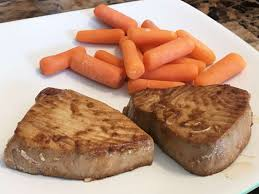

Tuna steak
Back to Home
Ingredients
- Tuna steak
- Salt
- Pepper
- Olive oil
Directions
- first pour olive oil onto a cast iron pan or any stainless steel pan
- pat dry tuna steak and season liberally with salt and pepper
- once pan is smoking hot place seasoned tuna steaks on pan flipping about a minute and thirty seconds later
- once both sides have developed a brown crust they are ready to eat, dont worry if steak is very pink in the middle thats where all the flavor is
- mourn the majestic fish that gave its life for such a delectiable meal and proceed to eat 3 or 4 of them because theyre that good
